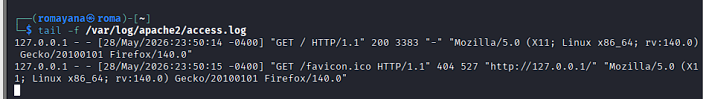
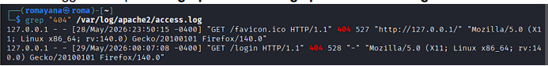
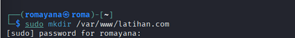
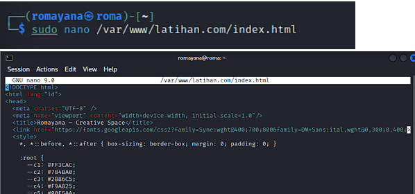
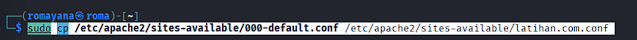
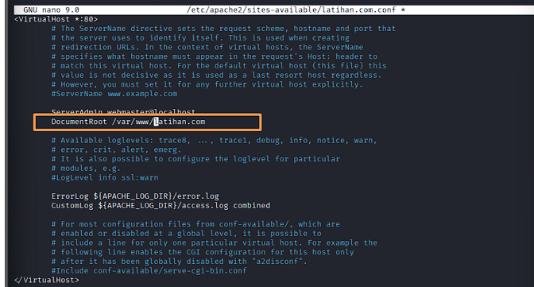
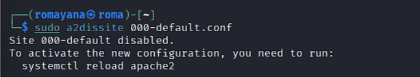
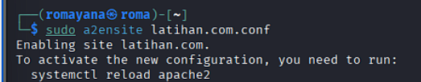
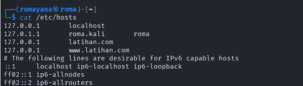
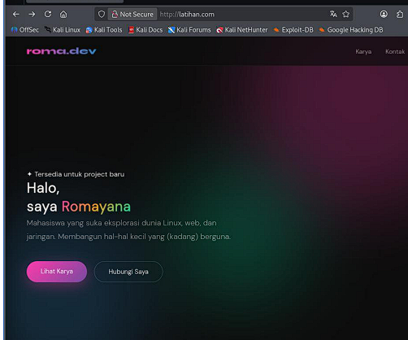

Management System & Server di Kali Linux: Apache2 & Virtual Host
Project ini mengeksplorasi administrasi web server Linux secara end-to-end: mulai dari memverifikasi status Apache2, memonitor access log, membuat Document Root, mengonfigurasi Virtual Host untuk domain lokal, hingga memastikan website dapat diakses melalui browser.
Project Overview
1. Verifikasi Status Apache2
Langkah pertama adalah memastikan service Apache2 aktif dan berjalan sebelum melakukan konfigurasi lebih lanjut.

apache2.service dalam kondisi
active (running)
2. Monitoring Access Log
2.1 Real-time Log Monitoring
Perintah tail -f digunakan untuk memantau log akses secara
real-time dan melihat request HTTP yang masuk ke server.

2.2 Filter Log Error 404

3. Membuat Document Root
Document root adalah direktori di mana file website disimpan. Dibuat
direktori khusus untuk domain latihan.com.

4. Membuat File index.html
File index.html dibuat sebagai halaman utama website
menggunakan editor nano. Halaman ini berisi portfolio pribadi dengan
desain modern menggunakan Google Fonts dan CSS variables.

5. Konfigurasi Virtual Host
5.1 Menyalin Konfigurasi Default
Konfigurasi Virtual Host dibuat dengan menyalin template default
Apache2, lalu memodifikasinya sesuai domain latihan.com.

5.2 Edit DocumentRoot
File konfigurasi dibuka dengan nano. Parameter
DocumentRoot diubah dari /var/www/html menjadi
/var/www/latihan.com.

6. Aktivasi & Deaktivasi Site
6.1 Menonaktifkan Site Default

6.2 Mengaktifkan Site latihan.com
$ sudo systemctl reload apache2

7. Konfigurasi /etc/hosts
Karena latihan.com adalah domain lokal, ditambahkan entri
pada file /etc/hosts agar sistem dapat meresolusi domain ke
IP lokal (127.0.0.1).

8. Hasil Pengujian
Setelah seluruh konfigurasi selesai, website diakses melalui browser Firefox untuk memverifikasi bahwa Virtual Host berjalan dengan benar dan halaman HTML berhasil ditampilkan.

Rangkuman Perintah
| Perintah | Fungsi |
|---|---|
| sudo systemctl status apache2 | Cek status service Apache2 |
| tail -f /var/log/apache2/access.log | Monitor log akses Apache2 secara real-time |
| grep "404" /var/log/apache2/access.log | Filter request dengan error 404 dari log |
| sudo mkdir /var/www/latihan.com | Buat direktori document root untuk domain |
| sudo nano /var/www/latihan.com/index.html | Buat file HTML halaman utama |
| sudo cp 000-default.conf latihan.com.conf | Salin template konfigurasi Virtual Host |
| sudo nano latihan.com.conf | Edit konfigurasi: ubah DocumentRoot |
| sudo a2dissite 000-default.conf | Nonaktifkan site default Apache2 |
| sudo a2ensite latihan.com.conf | Aktifkan Virtual Host latihan.com |
| sudo systemctl reload apache2 | Reload Apache2 untuk menerapkan konfigurasi baru |
Kesimpulan
Project ini berhasil mendemonstrasikan konfigurasi Apache2 Virtual Host
secara end-to-end pada Kali Linux. Dimulai dari verifikasi status
service, monitoring log, pembuatan Document Root, konfigurasi Virtual
Host, manajemen site dengan
a2ensite/a2dissite, hingga resolusi domain
lokal melalui /etc/hosts. Website berhasil diakses melalui
browser dengan tampilan yang sesuai.
Skill yang dipraktikkan meliputi administrasi Linux server, konfigurasi web server Apache2, analisis log HTTP, dan manajemen DNS lokal — fondasi penting dalam karir server/sysadmin maupun web security.